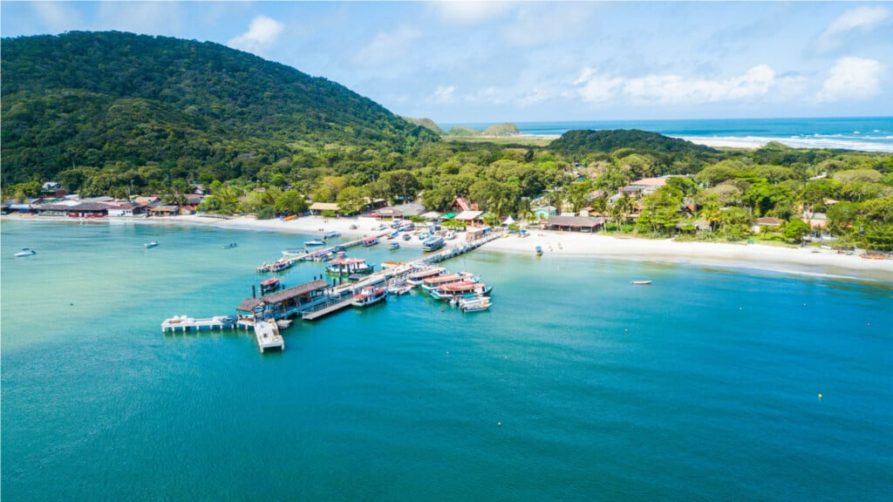
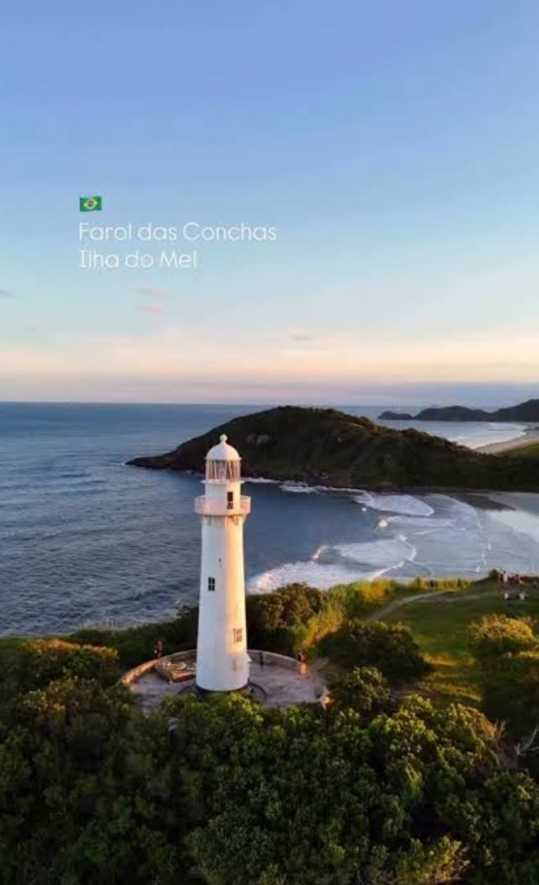
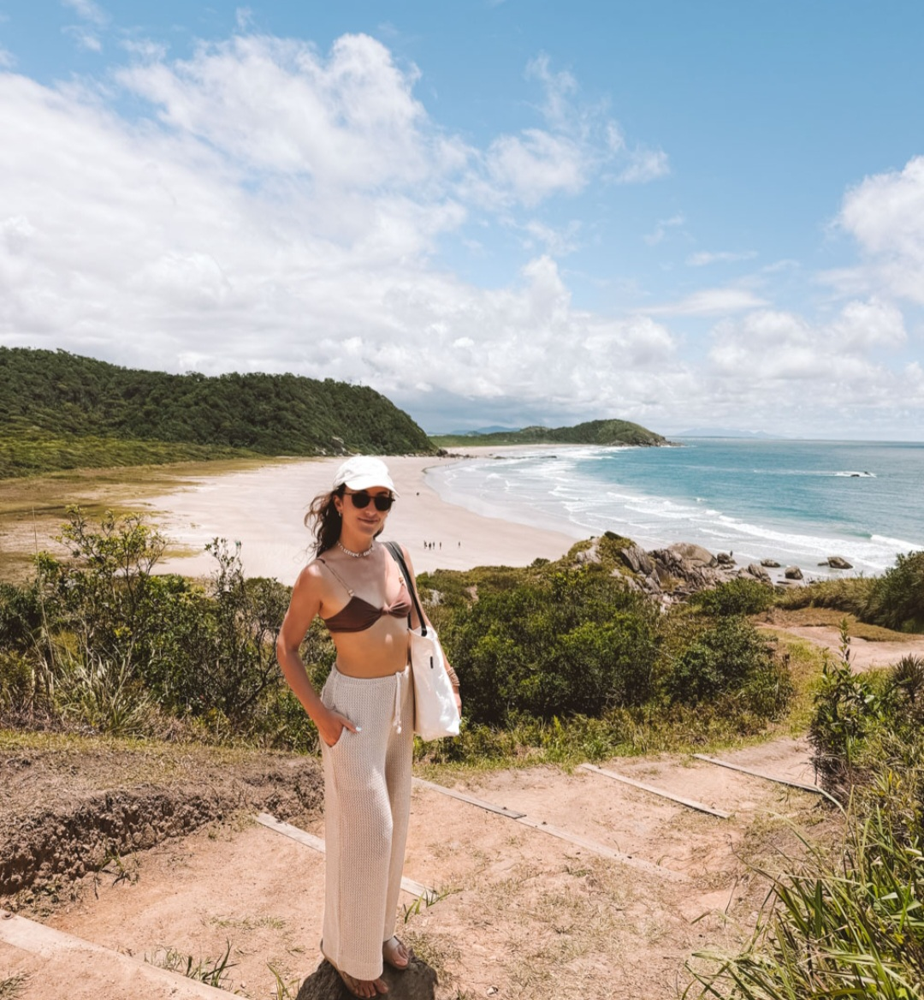
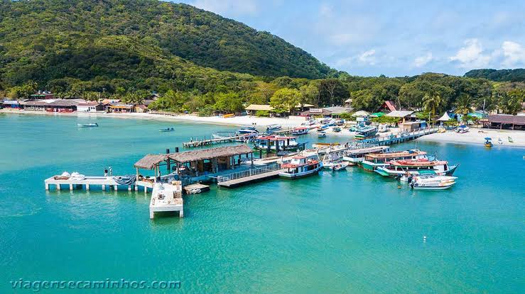

Sobre a ilha do mel
é um dos principais destinos de ecoturismo e patrimônio histórico do litoral do Paraná, situada na entrada da Baía de Paranaguá. Pertencente ao município de Paranaguá, a ilha possui cerca de 2.762 hectares e tem mais de 90% de sua área protegida por unidades de conservação ambiental. Seu território abriga remanescentes bem preservados de Mata Atlântica, manguezais, restingas e extensas faixas de praias quase intocadas. Um dos grandes diferenciais do local é a ausência total de carros, motos e estradas asfaltadas, o que garante um ambiente tranquilo e silencioso. Todo o deslocamento interno é feito a pé, por trilhas de terra batida e pela areia, ou por meio de pequenos barcos entre as comunidades. A infraestrutura turística concentra-se principalmente nas vilas de Nova Brasília e Encantadas, que oferecem pousadas charmosas, campings e restaurantes simples.

Importância Cultural
A importância cultural da Ilha do Mel está profundamente ligada à preservação da memória histórica do Paraná e às tradições das comunidades caiçaras que habitam o local há gerações. Esse patrimônio manifesta-se tanto em monumentos tombados do período colonial e imperial — como a Fortaleza de Nossa Senhora dos Prazeres, erguida no século XVIII para proteger a Baía de Paranaguá, e o centenário Farol das Conchas — quanto na cultura imaterial viva. O cotidiano dos moradores nativos preserva saberes tradicionais da pesca artesanal, da gastronomia típica à base de frutos do mar, do artesanato e do folclore regional, marcado por festas religiosas e lendas populares, como a famosa história das sereias da Gruta das Encantadas, que mantêm viva a identidade e a ancestralidade da região.

Contexto Histórico
A Ilha do Mel teve papel estratégico na defesa do Brasil Colonial. Em 1767, Portugal ordenou a construção da Fortaleza de Nossa Senhora dos Prazeres para proteger a Baía de Paranaguá de invasores espanhóis e piratas. No século XIX, o local foi palco da Questão Christie, um conflito diplomático com a Inglaterra que começou após o naufrágio do navio britânico Prince of Wales na costa sul. Mais tarde, em 1872, o imperador Dom Pedro II mandou construir o Farol das Conchas para guiar a navegação comercial na região. Durante a Segunda Guerra Mundial, o exército brasileiro voltou a ocupar a ilha estrategicamente, instalando ninhos de metralhadoras no Morro da Baleia para vigiar possíveis submarinos inimigos.

Principais Atrações
Ilha do Mel: natureza pura e história. Descubra a mística Gruta das Encantadas com suas lendas, a vista incrível do Farol das Conchas, a Fortaleza do século XVIII e as ondas perfeitas da Praia de Fora. Um paraíso sem carros para renovar a alma.

Curiosidades
Curiosidade 1
A Ilha do Mel, localizada no litoral do Paraná, é conhecida por suas praias, trilhas e natureza preservada. Uma curiosidade é que não existem carros na ilha, então os visitantes precisam caminhar ou usar bicicletas para se locomover. Além disso, a ilha possui o famoso Farol das Conchas, construído em 1872.
Curiosidade 2
E uma curiosidade sobre a Ilha do Mel muito interessante é que ela tem o formato parecido com uma baleia, e esse formato pode ser percebido melhor quando visto de cima.